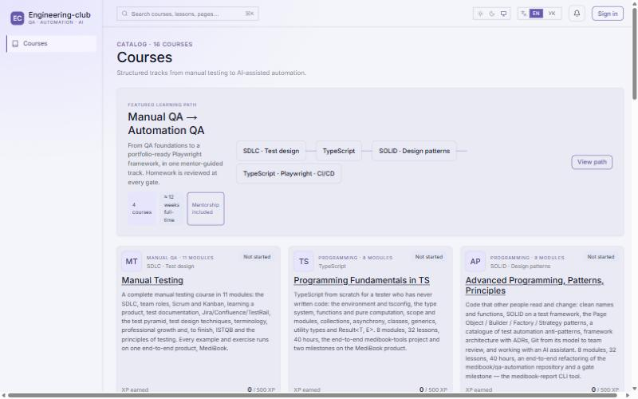
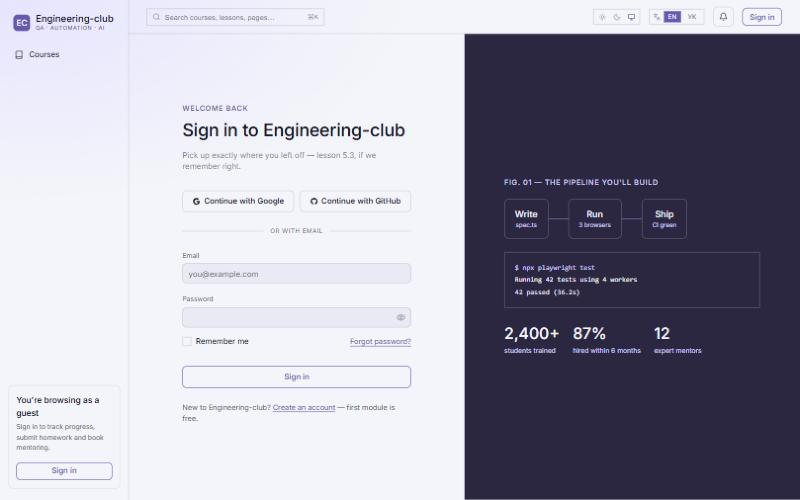
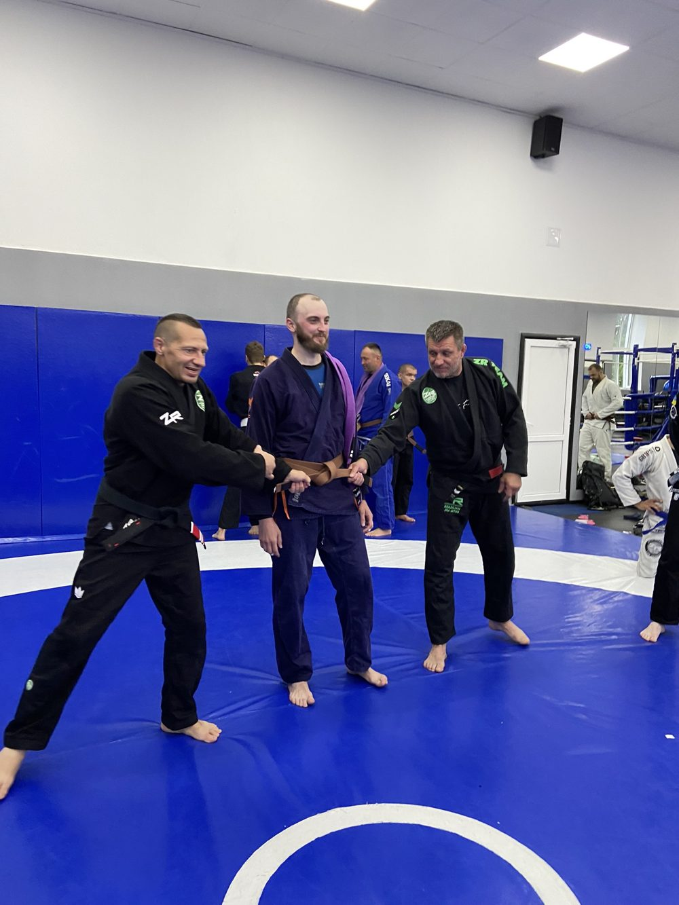

I build AI-powered products and the test systems that keep them shipping.
Senior QA Automation Engineer with 14 years in test automation and CI/CD, moving into Forward Deployed / AI Engineering. Below: two products I designed, built and run end to end.
A SaaS that compares an IT professional's CV, LinkedIn and skills with the job market, then returns a salary range, a CV score and a ranked plan of what to learn next. Built for the US, Europe and Ukraine.
→Monetization — free entry tool, per-tool plans from $2/mo, All Access $19/mo, monthly / yearly billing
→Privacy by design — uploaded CV file deleted right after analysis
→My role — product, architecture, LLM prompts, frontend, payments, QA
Next.jsTypeScriptPlaywright


02 · LEARNING PLATFORM + AI AGENT ACCESS · LIVE
Engineering-club Platform
An education SaaS for QA and test automation: courses, homework review, mentoring and goal tracking — plus an MCP server that lets an AI assistant run the platform with a human in the loop.
→16 courses and a guided path: Manual QA → TypeScript → design patterns → Playwright & CI/CD
Students ask what interviewers really ask — and get a cited answer linked to the exact recording and timecode, from 56 recordings of HR, technical and manager interviews at IT companies.
Students prepare for QA Automation interviews. There are ~47 hours of real interview recordings in mixed Ukrainian, Russian and English — and nobody re-listens to them.
Goal: ask "what do they ask about SQL in technical interviews?" and get an answer linked to the exact recording and timecode, drawn only from courses the student can access — and a refusal when the recordings hold no answer.
SOLUTION
Ingestion · GPU workstation (RTX 5080)
Transcribe
faster-whisper large-v3, 60–90 s windows
→
Extract & translate
Claude Batches API (−50%), Pydantic JSON schema
→
Index
bge-m3 + BM25 on UA lemmas → Qdrant
Query · FastAPI service
Platform
60 s Ed25519 JWT: role + courses
→
Hybrid search
dense + BM25, RRF, course filter in-search
→
Rerank gate
score = refusal threshold
→
Cited answer
Sonnet 5.5, search_result blocks, [n] + timecodes
Plus: per-user limits 10/min and 100/day from a Postgres journal with an advisory lock · JSON logs without question text · resumable ingestion runs · feature-flagged /interviews page.
CHALLENGES
01
Mixed languages
Detected by letters (і/ї/є/ґ vs ы/э/ъ/ё); only non-Ukrainian windows translated. Fully Ukrainian index, originals kept alongside.
02
Raw transcripts search poorly
Added a separate collection of extracted interview questions.
03
Phrasing hurt retrieval
Eval showed "what do they ask about…" diluted search: now it runs on the subject, and a named company becomes a filter.
04
Reranker lowered recall
Questions keep hybrid order; the reranker score became the refusal threshold, filtering off-topic queries without an LLM call.
05
Model choice from data
Sonnet 5.5 was as faithful as Opus 5.5 at 2.3× lower cost.
06
17 s reranking on CPU
Rerank only the 12 best transcript windows: 6.3 s in the container.
fair questions refused · off-topic refused before Claude call
0 leaks
course isolation
$0.038
per answer (Opus: $0.090) · whole corpus processed for $6.30
113 ms
retrieval on GPU · ~6.3 s on CPU · answer 10–20 s
142 tests
pytest in the service · Vitest + Playwright on the platform · CI on every PR
Caveat: the eval's reference labels come from the model (topics) and from keywords, not from human annotators, so these numbers compare configurations rather than measure absolute quality.
Achievements in industry
TUI · CURRENT
Regression from 4 days to ~1.5 hours
96% automated coverage, Playwright + CI/CD.
CRYPTO PROJECT
34 microservices under API tests
Led a team of up to 10; OWASP Top 10 security testing.
GLOBALLOGIC · PREPLY
Led QA teams of 12 and 7+
Hired and interviewed engineers, built automation from scratch.
AI IN DAILY WORK
Claude, Cursor, Copilot, n8n
AI-assisted test generation and workflow automation.
Beyond work
What keeps me sharp and patient off the keyboard.

Brazilian jiu-jitsu
Regular training and belt promotions. Problem-solving under pressure, one position at a time.
Fishing
Early mornings on the water. Patience, reading conditions, and the occasional pike.